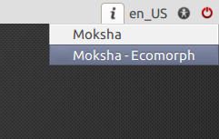
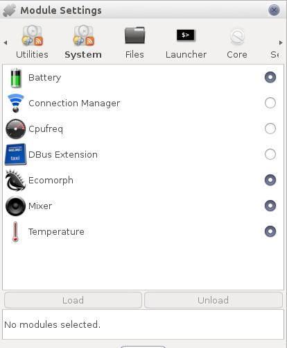
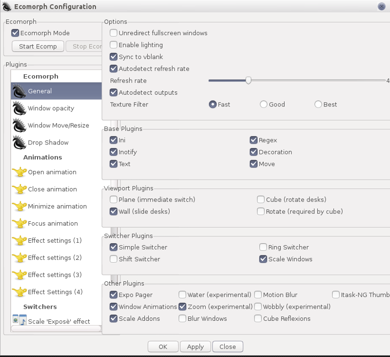
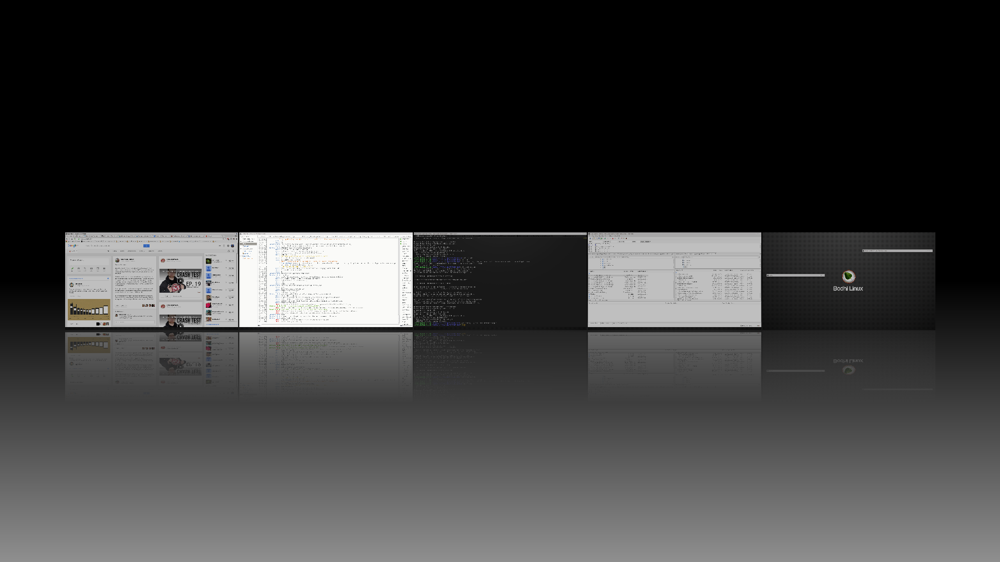

[click on any image to enlarge]
Ecomorph compositing manager
Ecomorph consists of a compositing manager based on Compiz (renamed to ecomp) and a module for moksha that works together with ecomp. Thanks to the Ecomorph module for enlightenment, you can enable many of your favorite Compiz effects on the Moksha desktop.
The first thing you need to do to enable Ecomorph's effects is log out and log into the Ecomorph session:

Then load the ecomorph module under Modules/System submenu:

Finally run the ecomorph configuration panel to configure to your preferences:

Ecomorph also adds a list of actions you can bind to your preferred key-sets (such as toggling expo). Configure these under Settings->Settings Panel->Input->Key Bindings. Enjoy your tricked-out Moksha desktop!
